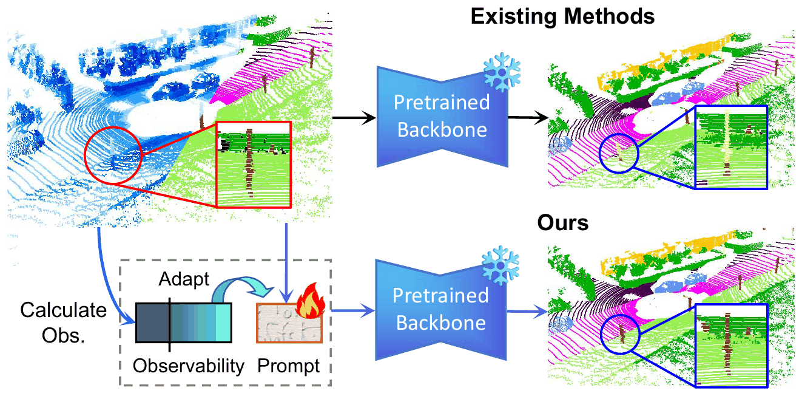
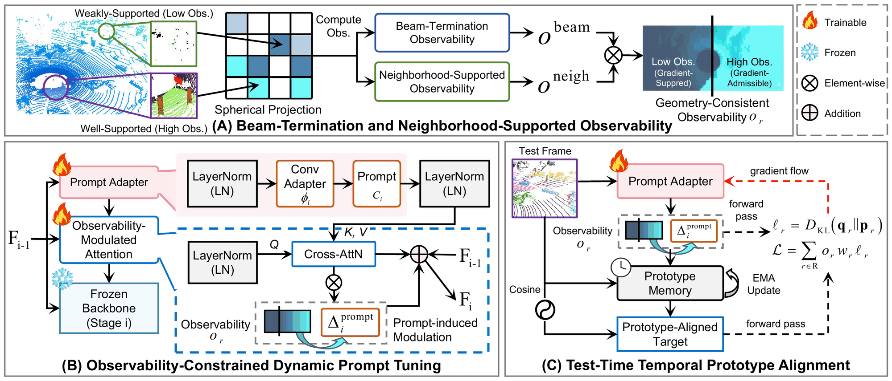
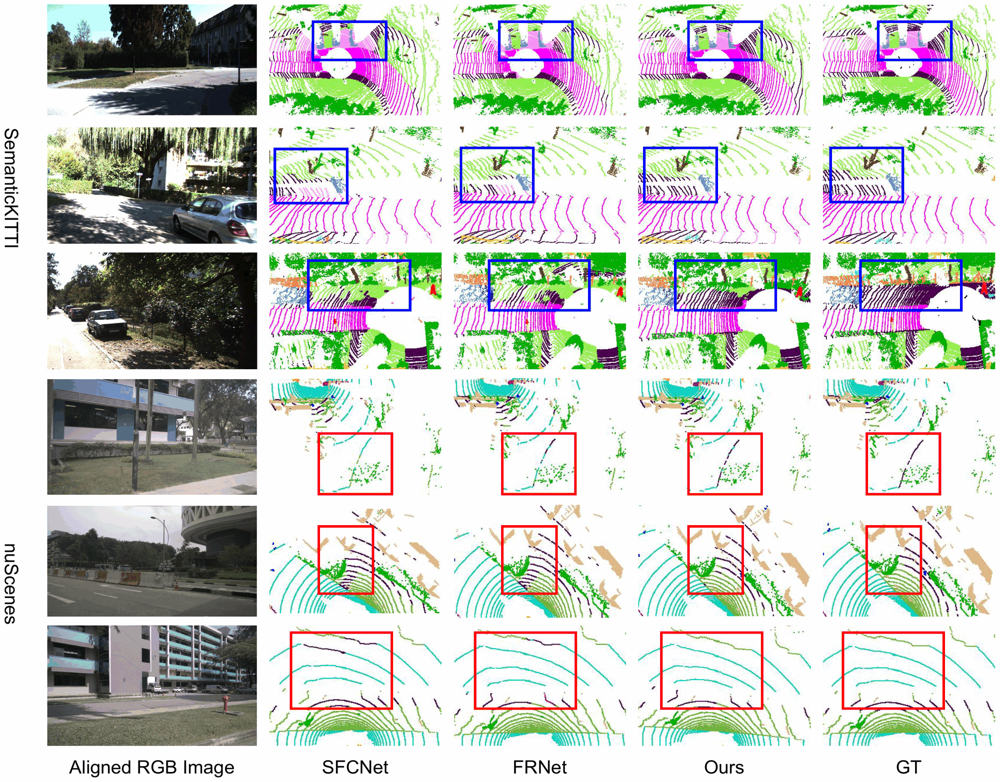
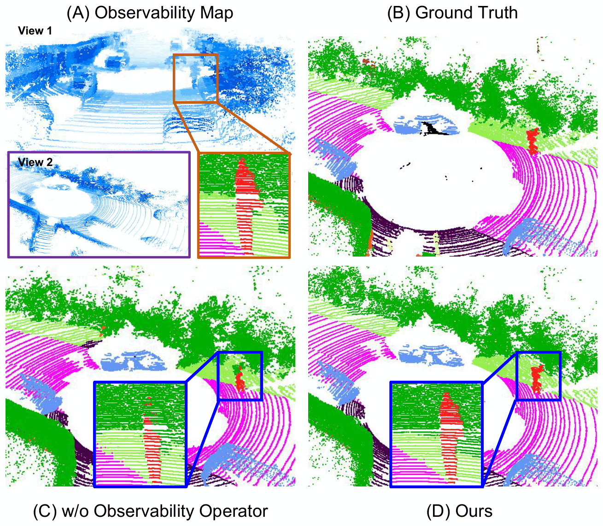

A wise man, therefore, proportions his belief to the evidence.

Abstract
LiDAR semantic segmentation often degrades under real-world deployment due to evolving sensing conditions, while collecting new annotations for retraining is impractical. Test-time adaptation (TTA) updates model parameters online using pseudo-label supervision, but directly applying standard TTA strategies to LiDAR data is challenging. Because pseudo-label reliability is spatially heteroscedastic under range-dependent sparsity and occlusion, uniform updates on globally shared parameters can inject unstable gradients and destabilize adaptation. We propose a geometry-constrained test-time prompt tuning framework for LiDAR semantic segmentation. Our method estimates per-location sensing reliability from depth-consistent beam terminations and neighborhood support, and uses it to reweight spatial supervision. Adaptation is confined to lightweight prompt adapters inserted into a frozen backbone, with spatial gating to prevent unreliable regions from perturbing globally shared representations. A temporally smoothed prototype alignment strategy further stabilizes online updates by accumulating reliable semantic evidence over time. Experiments on standard LiDAR benchmarks demonstrate improved adaptation stability and segmentation performance under deployment variations without additional annotations.
Method

Results


BibTeX
@article{jiang2026noob,
title={No Adaptation Without Observation: Observability-Constrained Test-Time Prompt Tuning for LiDAR Semantic Segmentation},
author={Jiang, Linlian and Ju, Wentao and Pinon, Sadman Rakib and Xian, Jianwei and Chi, Zhixiang and Zuo, Xinxin and Wang, Yang},
journal={arXiv preprint arXiv:2606.30937},
year={2026}
}